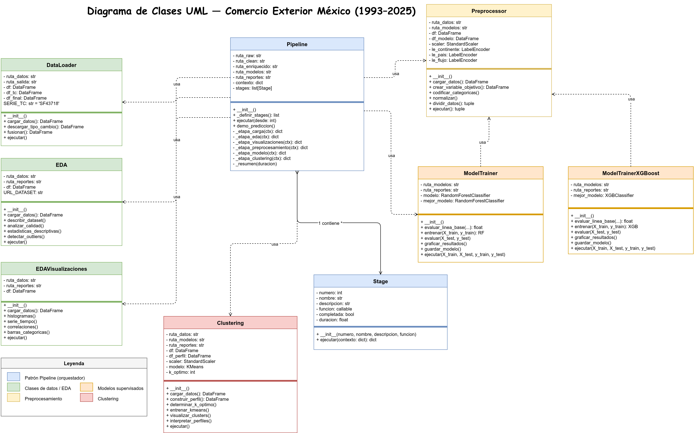
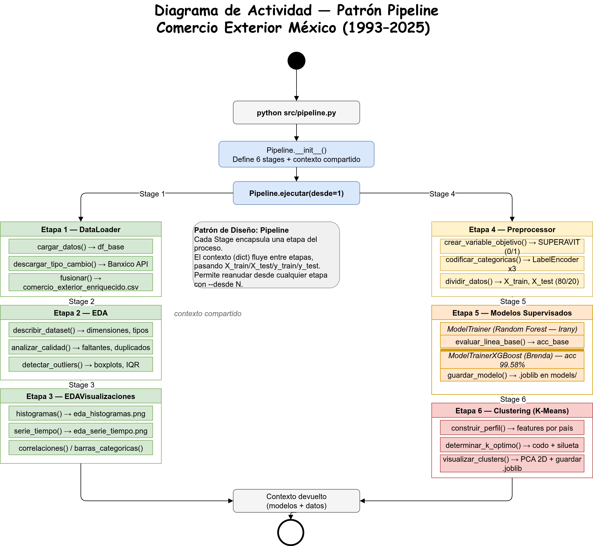

Arquitectura y Diseño
Estructura de clases
El proyecto está organizado en 9 clases Python con responsabilidades bien definidas, siguiendo principios de encapsulamiento y separación de responsabilidades (principio de responsabilidad única):
| Clase | Módulo | Responsabilidad |
|---|---|---|
DataLoader |
data_loader.py |
Carga del CSV y enriquecimiento con tipo de cambio |
EDA |
eda.py |
Calidad de datos y estadísticas descriptivas |
EDAVisualizaciones |
eda_visualizaciones.py |
Histogramas, series de tiempo y correlaciones |
Preprocessor |
preprocessor.py |
Encoding, normalización y división 80/20 |
ModelTrainer |
model_trainer.py |
Entrenamiento y evaluación Random Forest |
ModelTrainerXGBoost |
model_trainer_xgboost.py |
Entrenamiento y evaluación XGBoost |
Clustering |
clustering.py |
K-Means, visualización PCA y perfiles |
Stage |
pipeline.py |
Etapa individual del pipeline |
Pipeline |
pipeline.py |
Orquestación del flujo completo |
Patrón de diseño: Pipeline
Se implementó el patrón Pipeline, el más adecuado para este proyecto porque el procesamiento ocurre en etapas secuenciales bien definidas y dependientes entre sí:
DataLoader → EDA → EDAVisualizaciones → Preprocessor → ModelTrainer → ClusteringCada etapa está encapsulada en un objeto Stage con su nombre, descripción y función ejecutable. El objeto Pipeline orquesta la ejecución secuencial pasando un contexto compartido (diccionario Python) entre etapas.
Ventajas del diseño
- Depuración facilitada: permite ejecutar desde cualquier etapa con
--desde N, evitando re-ejecutar etapas costosas (como el entrenamiento). - Mantenimiento: cada clase puede modificarse sin afectar las demás, siempre que respete las claves del contexto compartido.
- Observabilidad: cada etapa reporta su tiempo de ejecución y estado de completitud.
Fragmento del patrón Stage
class Stage:
"""Representa una etapa individual del pipeline."""
def __init__(self, numero: int, nombre: str,
descripcion: str, funcion):
self.numero = numero
self.nombre = nombre
self.descripcion = descripcion
self.funcion = funcion
self.completada = False
self.duracion = 0.0
def ejecutar(self, contexto: dict) -> dict:
"""Ejecuta la etapa y actualiza el contexto compartido."""
inicio = time.time()
contexto = self.funcion(contexto)
self.duracion = time.time() - inicio
self.completada = True
return contextoEjecución del pipeline
# Ejecutar el flujo completo
python src/pipeline.py
# Ejecutar desde la etapa 4 (Preprocessor) — omite carga y EDA
python src/pipeline.py --desde 4Diagramas UML
Diagrama de clases

Diagrama del pipeline

Serialización del modelo
Los modelos entrenados fueron serializados con joblib para permitir su reutilización independiente del entrenamiento. Los artefactos guardados son:
| Archivo | Contenido |
|---|---|
models/xgboost.joblib |
Modelo XGBoost entrenado (modelo final) |
models/random_forest.joblib |
Modelo Random Forest entrenado |
models/scaler.joblib |
StandardScaler ajustado en entrenamiento |
models/le_continente.joblib |
LabelEncoder para la variable CONTINENTE |
models/le_pais.joblib |
LabelEncoder para la variable PAIS |
import joblib
# Serializar
joblib.dump(modelo, "models/xgboost.joblib")
joblib.dump(scaler, "models/scaler.joblib")
joblib.dump(le_cont, "models/le_continente.joblib")
joblib.dump(le_pais, "models/le_pais.joblib")
# Cargar en cualquier script posterior
modelo = joblib.load("models/xgboost.joblib")
scaler = joblib.load("models/scaler.joblib")
le_cont = joblib.load("models/le_continente.joblib")
le_pais = joblib.load("models/le_pais.joblib")